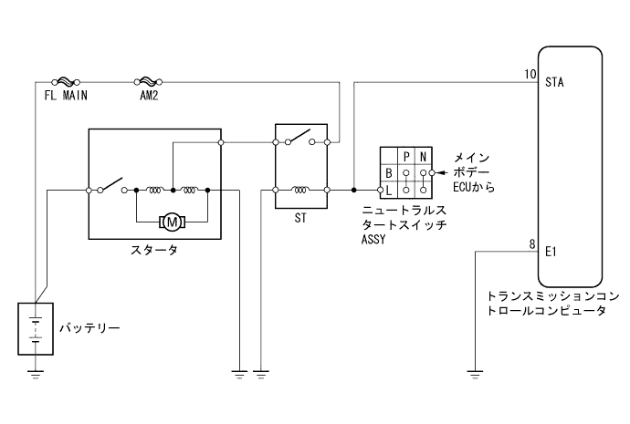
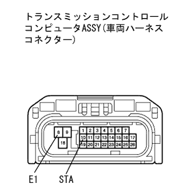
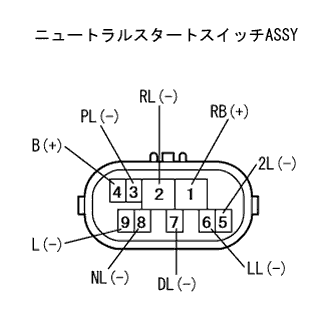

DTC P0617/43 Starter Circuit (High) |
| DTC No. SAE/TCCS | DTC Detection Conditions 1. Diagnosis conditions 2. Malfunction status 3. Malfunction duration 4. Other | Inspection Area |
|---|---|---|
| P0617/43 |
|
|

| Step 1 | Read TaSCAN Data (Starter Signal) |
Connect SST (TaSCAN) to DLC3.
Turn the IG ON and read the [Starter Signal] displayed on SST (TaSCAN) when the engine is started.
| Item Name [Symbol] | Item Description | Standard Value | Remarks |
|---|---|---|---|
| Starter Signal [STA] | Indicates engine starting Display: ON/OFF | OFF→ON IG ON → cranking | - |
|
| ||||
| OK | |
| Step 2 | Inspect Transmission Control Computer Assembly (STA Voltage Inspection) |
 |
Disconnect the transmission control computer connector.
Using SST (Toyota electrical tester), measure the voltage between the terminals. (For Terminals of ECU, see)
| Tester Connection | Condition | Standard |
|---|---|---|
| 10(STA) - 8(E1) | Always | Below 2 V |
|
| ||||
| OK | |
| Step 3 | Replace Transmission Control Computer Assembly |
Replace the transmission control computer assembly. (see)
| NEXT | ||
| ||
| Step 4 | Inspect Neutral Start Switch Assembly |
 |
Disconnect the neutral start switch connector.
Using the SST (Toyota electrical tester), measure the resistance between each terminal.
| Tester Connection | Condition | Standard |
|---|---|---|
| 4(B) - 9(L) | Shift lever position P or N | Below 1 Ω |
|
| ||||
| OK | ||
| ||